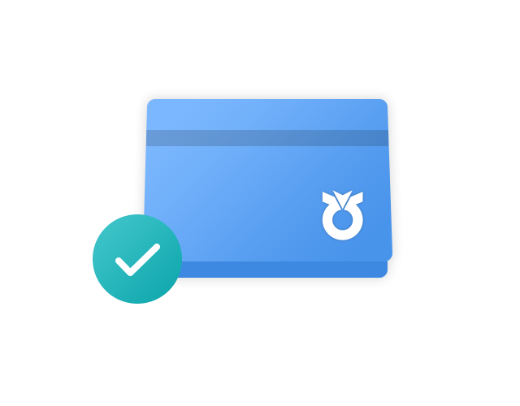
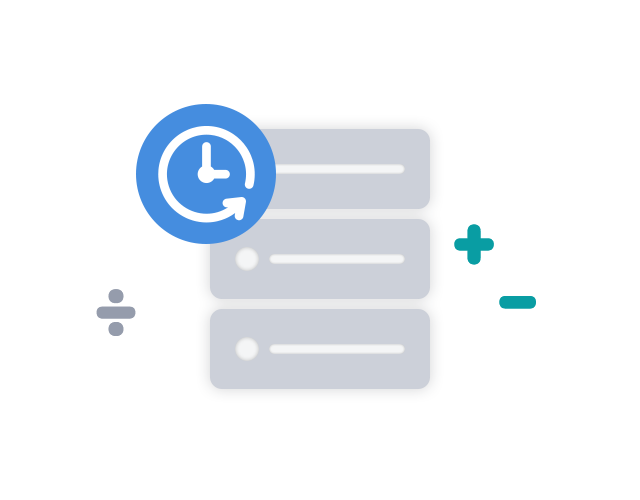
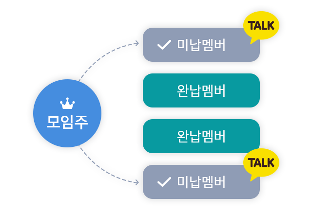

새로 개설할 필요없이
내 통장을 모임계좌로
내가 가지고 있는 통장을
모임계좌로 지정해
바로 모임활동을 시작할 수 있어요.

모임원 모두가 실시간으로
회비내역을 공유
매번 회비현황을 공유할 필요없이
모임원들이 실시간으로 회비내역을 확인 할 수 있어
투명한 회비 운영이 가능해요.

모임원별 납부/미납 체크를
한눈에 확인
아직 회비를 납부하지 않은 모임원에게
메시지로 회비 입금 요청을 할 수 있어요.

확인사항
- NH콕모임서비스는 모임주가 콕뱅크에 등록된 자신의 농∙축협 입출식 계좌를 가지고 초대된 모임원들과 함께 계좌내역을 공유하며 자금 관리를 함께 할 수 있는 서비스 입니다.
- 모임주의 계좌번호와 실명은 모임원들에게 모두 공개되며, 모임원은 모임개설일 이후 모든 거래내역 및 잔액을 조회할 수 있습니다.
- 콕모임은 콕뱅크에 등록된 농·축협 입출식 계좌를 기준으로 최대 10개 모임까지 개설하실 수 있습니다.
- 1모임 1계좌 원칙으로 1개의 통장을 2개 이상의 모임에서 동시 사용할 수 없습니다. 단, 모임을 폐쇄한 후 기존에 사용한 모임계좌를 새로 개설한 모임에서 모임계좌로 연결해 사용하실 수 있습니다.
- 모임별 초대할 수 있는 모임원은 최대 100명이며, 최대 참여 인원은 모임주 포함 총 101명입니다.
- 모임계좌의 변경 및 취소는 지원하지 않으며, 변경 및 취소를 원하시면 해당 모임 폐쇄 후 모임을 다시 개설하셔야 합니다.
- NH콕모임서비스에 연결된 계좌는 모임주 개인 명의의 통장으로 해당 모임 회비의 지급, 해지 권한은 모임주에게 있으며, 압류 등 모임계좌의 상태에 따라 NH콕모임서비스 이용이 제한될 수 있습니다.
- 농협은 NH콕모임서비스 이용 과정에서 발생한 모임원 간의 분쟁, 사기, 불법행위 등에 대해서는 온/오프라인을 불문하고 책임지지 않으니 이 점 유의해 주시기 바랍니다.